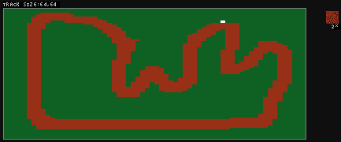

RallySportED User Guide
What's RallySportED?
RallySportED is a contemporary asset editor (modding tool) for the classic DOS game Rally-Sport!
Program requirements
The web version of RallySportED requires a compliant browser, typically a version of Chrome or Firefox updated in the last year or so and with JavaScript enabled. Other browsers or versions may (or might not) work. In any case, Chrome tends to be the best choice.
The RallySportED user interface requires a mouse and keyboard for proper operation. A mobile interface is on the TODO list, but there's no schedule for it at this time.
User interface
The RallySportED app's page is split into two main elements: the track info display at the top, and the editor view below it.
The track info display shows the name of the track you're currently editing, and provides controls for saving the track, etc.
The editor view below the info display presents a 3D view of the track you're editing. This is where you do all the magic.
When you load up the RallySportED page, note that the editor view won't be visible in its entirety, as the info display takes up some space at the top. To see the entire editor view, scroll the page down.
Controls
As noted above, you need a mouse and keyboard to operate RallySportED.
The mouse controls are as follows:
- Left click: move the ground up.
- Right click: move the ground down.
- Middle click: paint the ground with the currently-selected texture.
- Shift + left click on terrain: add a new prop.
- Shift + left click on prop: remove the prop (excluding the starting line).
- Right click on prop: set the prop's type (excluding the starting line).
- Left click on prop + drag: move the prop (excluding the starting line).
The keyboard controls are:
- E S D F: move the camera.
- 1 2 3 4 5: increase the mouse click edit radius.
- Space: enable smoothing mode (smoothen the terrain instead of raising/lowering it).
- L: level the terrain to the specified height all over.
- A: open/close the texture-selection pane.
- Q: open/close the paint view.
- W: toggle wireframe drawing.
- R: toggle the 3D top-down view.
- B: toggle drawing props on/off.
- Tab: Preview the current texture on mouse hover.
Note that there is at present no undo functionality in RallySportED. If you screw up, you have to manually reverse your steps!
Loading a track
There are two ways to load a track into RallySportED: address parameters, and file-dragging.
The first way is to use an address parameter. Check out this link. It appends the parameter original to the RallySportED web address, to specify that we want RallySportED to load track #4 of the Rally-Sport demo ("demod" for "Demo D", D being the 4th letter of the alphabet).
The second way to load in a track is to drag a RallySportED project file from your system onto the RallySportED editor view. The project file is a zip archive produced for you by RallySportED when you save a track – the file contains a folder that holds the track's data, as shown below.

Saving a track
You can find an option at the top of the RallySportED page to save a copy of the current track you're working on. Clicking on it serves you a zip file that contains the project's data, of which an example above.
Tutorial: creating a new track
Here's a runner-downer on how to create a new track for Rally-Sport using the web-based RallySportED editor!
Starting out
Making a new track with RallySportED always starts out with loading up an existing track as a basis. Generally, this will be one of the eight tracks of the Rally-Sport demo.
To get started, load in track #1 using the track address parameter, like so:
Click here! (Preferably open in a new tab.)When you direct your browser to that address, RallySportED should load up the track and greet you with a view like this (the picture omits the track info display):
At this point, you might try out the controls: move the camera around a bit, etc. If at first the controls don't seem to be doing anything, try clicking on the editor view to give it input focus.
When you're ready, hit the L key on your keyboard to bring up the terrain-leveling prompt. The prompt's visual style will depend on your browser, but it should ask you for a height value to level the terrain with. Enter in '0' and select OK.
Having done so, you should be met with a fully flat terrain.
Next, press the A key to bring up the texture-selection pane. It'll pop up on the left-hand side of the editor. In the pane, hover the mouse over the texture that says "PALA:1", then click it with the left or right mouse button. As you do this, the right-hand side of the editor should change to reflect that you've now selected this grassy texture.
Now press A again to close the texture pane, then Q to open the top-down painting view. This is a top-down 2D view of the track, useful for laying down large-scale features, like roads. With your grassy texture selected, press the 5 key to select the largest edit radius (you'll see a number change on the right-hand side of the editor to reflect this), then press and hold the middle mouse button while you drag the cursor across the 2D map. As you do this, you'll see the map fill up with green. Fill it up fully, then press the Q key to return to the 3D view.

(Note that there will always be a large white pixel visible in the paint view that you can't erase. It won't be visible on the actual track; rather, it's the track's checkpoint – the point near which your car must pass in the game for the lap to be counted as valid. You'll always want your road to pass over or close to this point, as you can see the game's original tracks doing.)
Once back in the 3D view, move the camera over to the finish line, which looks like the picture below. Once you find it, open the texture pane again (A), select texture #96, and set your edit radius to 1 (the 1 key). Use the middle mouse button to draw a line under the finish line, like in the image below. If you mess it up, just select the grass texture (#1) again, and paint over any mistakes.

When you now open the paint view (Q) again, you'll see a lot of green but also a brown horizontal line. This is a temporary visual aid for you that tells you where the finish line is, for when you're laying down the road.
Laying the road
While you have the gravel texture (PALA #96) selected and the paint view (Q) open, press the 2 key to get a slightly enlarged edit radius, then draw a road onto the map, starting at the finish line, snaking around the map, and winding back at the finish line.

Returning to the 3D view by pressing Q, you can see that there's now a road going on. Problem is, it doesn't look smooth: it has a pixelated, staircase-y effect. To fix this, open the texture pane and look through it. You'll see a bunch of tiles with variously-angled slabs of gravel. With these tiles, you can smooth out the edges of your road. It's manual labor, but suck it up. Below, you can see some 45-degree road tiles having been put down.

Decorating the terrain
Now that there's a road going on, even if you didn't yet smooth it all out, you can add some surface decorations to make it more interesting to drive on.
The first thing you might do is to alter the height of the terrain to create hills, dips, and so on. Just use the left and right mouse buttons, together with the edit radius and smoothing option (spacebar), to rough up the terrain some. Below, I've added some ups and dips and some touches of texturing.
The next thing you might put in are some spectators. For these, open the texture pane, and select texture #240. As you now move the cursor over the terrain while pressing Tab, you'll see a spectator pop up next to the cursor. When you apply the texture, a spectator will be stood there. Experiment with textures #240 and up – there's bushes and wooden poles in there, too.
Testing the track in Rally-Sport
Having put in a few basic bits and bobs, you may now want to give the track a test-drive. To do that, find the save button at the top of the RallySportED page, above the editor view, and click it. Your browser should serve you a zip file called DEMOA.ZIP. It contains the data files required to run the track in Rally-Sport, as well as for loading the track back into RallySportED, should you close the page in the interim. (When you want to distribute your track to other people, these are the files you want to send them, along with the instructions from below on how to run the track in the game.)
If you don't already have the Rally-Sport demo on your computer, you'll need to get it. First, download the desktop version of RallySportED, and extract the RALLYS.ZIP file that comes with it into a folder called C:\RALLYS. You could use some other name and/or directory, but I've chosen this one for textual brevity. Once you've done that, extract the RallySportED files into C:\RALLYS, as well. Now when you execute the DIR *.EXE command (inside DOS or DOSBox) in C:\RALLYS, the following should be your output:
[A PICTURE ALONG THOSE LINES WILL GO HERE SOONER OR LATER]So to play the track in Rally-Sport, extract the DEMOA.ZIP file you got from RallySportED into C:\RALLYS, so that the track's files come to be under C:\RALLYS\DEMOA\. Then browse into C:\RALLYS (in DOS or DOSBox), type "RLOAD DEMOA", and Rally-Sport should launch. From the game's main menu, choose to start the race – you're now playing your (likely very unfinished) track in Rally-Sport!
From this point on, you'd go back to the editor, make some changes, test them in the game to verify whether they're fun to drive, and rinse and repeat until you have a finished track.
Adding the AI opponent
One of the things you might notice when you play your new track in Rally-Sport is that the CPU opponent doesn't do a good job of staying on the road. That's because it thinks it's still on the old track that you used as a basis for the new one (track #1, in this tutorial). You can fix that by using the RAI tool that comes with the desktop version of RallySportED.
The RAI tool must be run under DOS (or in DOSbox). If you set up the desktop version of RallySportED as described above, you'll already have RAI in C:\RALLYS. So you can navigate there, enter the command RAI DEMOA, and Rally-Sport should pop up:
What you're seeing is the same as when you play the track in Rally-Sport normally, except now you have "recording" written across the bottom of the screen. The gist of this is that RallySportED will now record the lap you race in this instance of Rally-Sport, and save it as the AI opponent for that track.
So just drive the lap normally, and once the race finishes, press the spacebar to quit back to the command prompt, where RAI should tell you that it succeeded in creating the AI opponent. The opponent is now saved into the track's DTA file (under C:\RALLYS\DEMOA\), so you'll want to update your track's zip file with this new DTA file. Then drag the zip into RallySportED to let it know of these changes.
Renaming the track
Locate the zip file that RallySportED spat at you when you saved the track, and open it. Inside this file, rename the DEMOA folder into TUTORIAL. Change the names of the $FT and DTA files to TUTORIAL, as well, but leave the HITABLE.TXT file as is. See below for the expected result.
You've now renamed the track to "Tutorial". When you drag the zip file back onto the editor view in RallySportED, you should see it loaded in by that name. The zip file itself you can call whatever you want, its name doesn't matter to RallySportED.
In deciding what to call a track, RallySportED will look at the name of the folder under which the track's data files ($FT and DTA) are located. It also expects those two data files to be called by that name. The name can be up to eight characters long, and those characters must be from A-Z, which means no spaces, numbers, or the like. If RallySportED doesn't like the name you've provided, it'll probably let you know when you drag the file in.
Adding bridges
Todo.
Dealing with water
Todo.
Advanced editing with the manifesto ($FT) file
Todo. (For more info, see the readme that comes with the desktop version of RallySportED.)
A note on Rally-Sport's texture distortion
Todo.